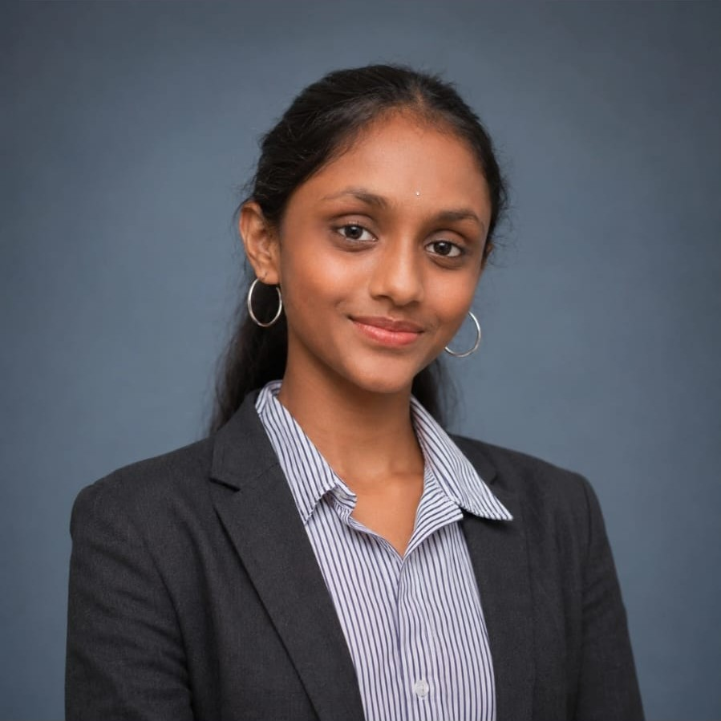
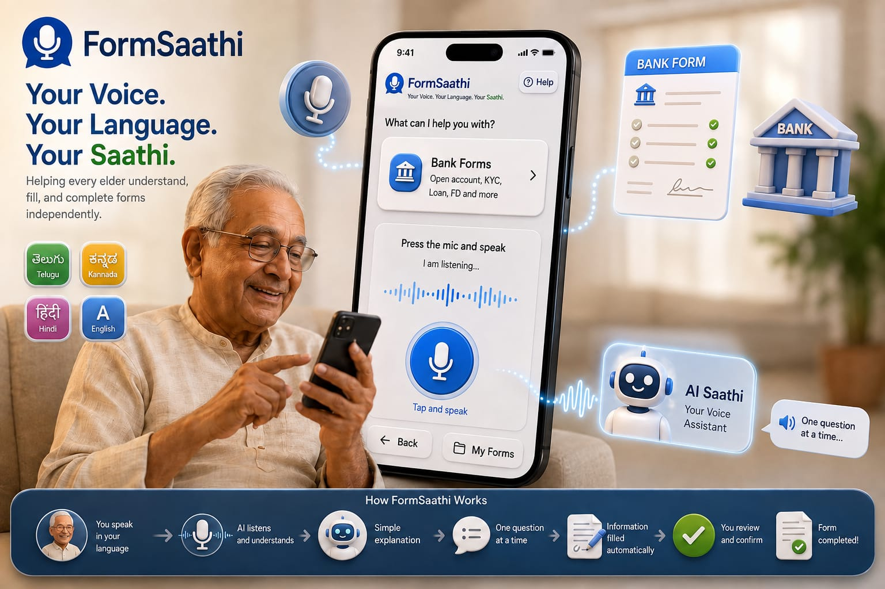
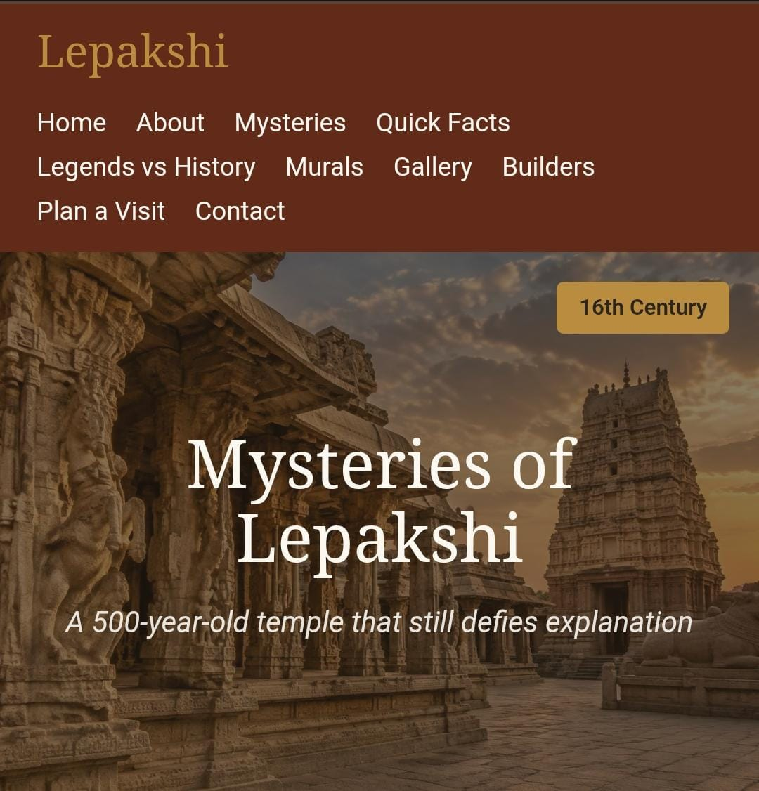
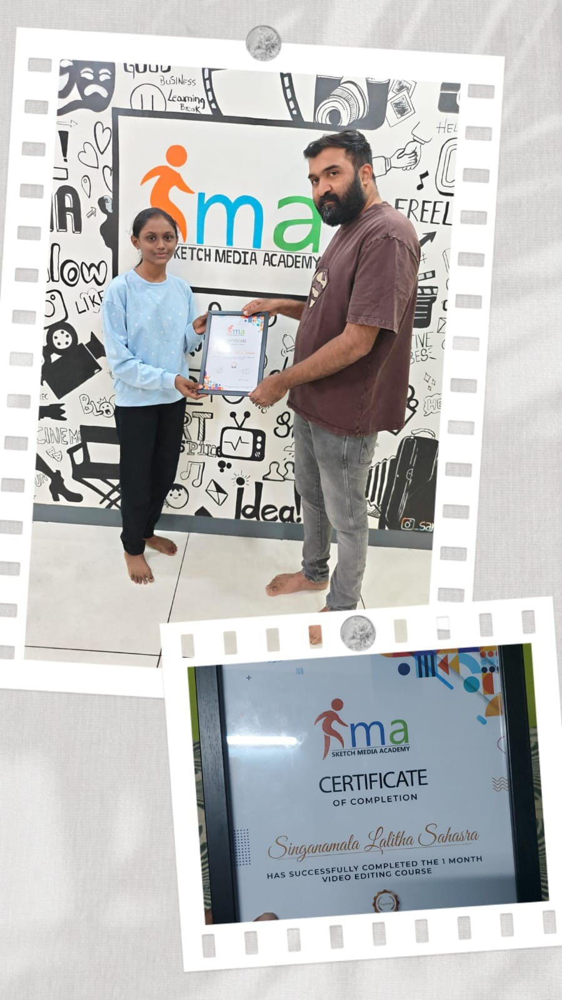
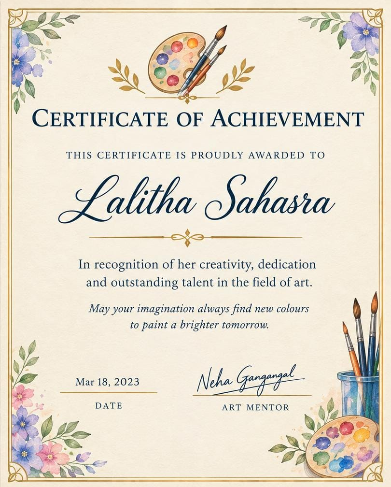
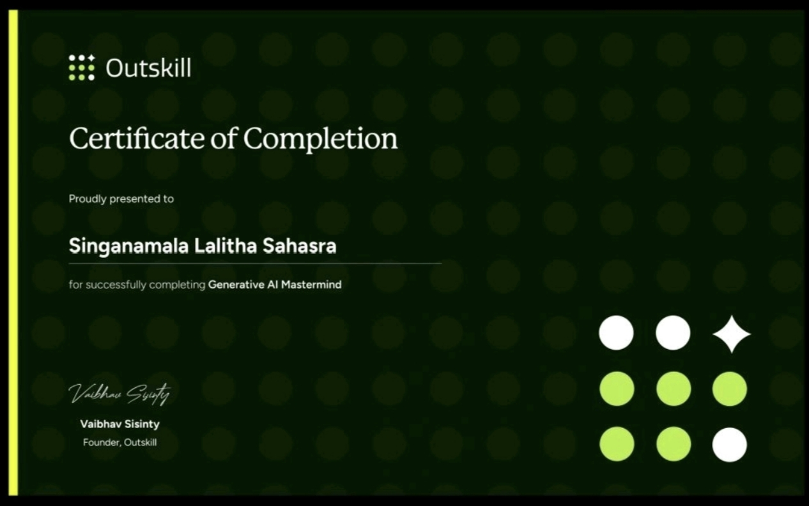
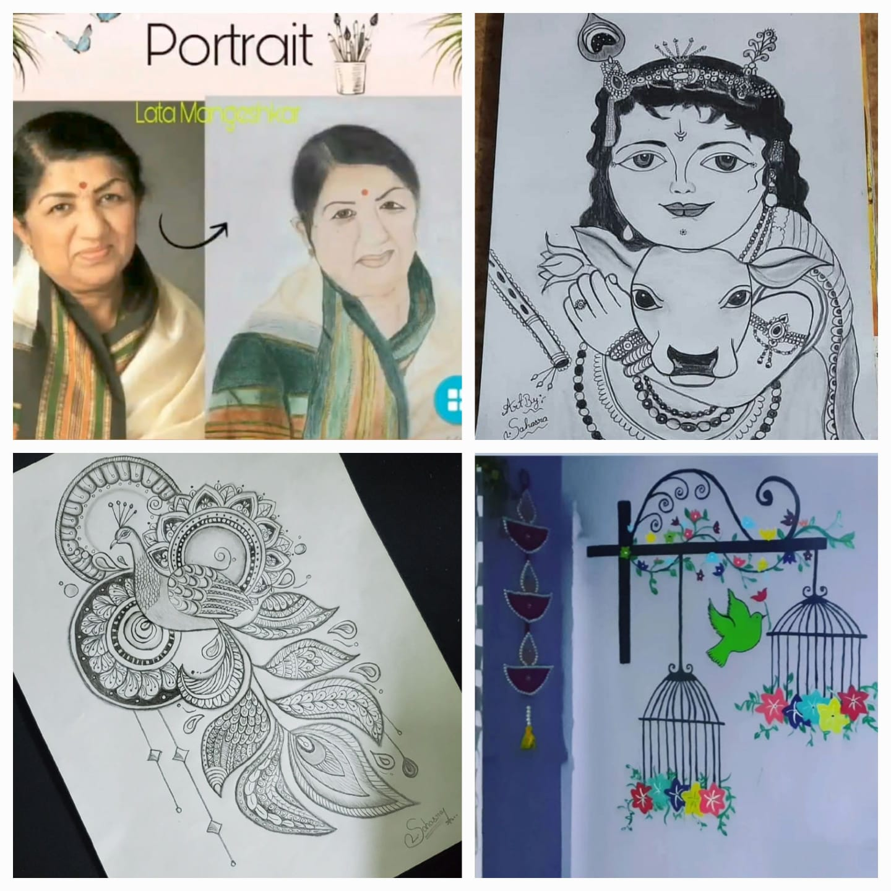

WELCOME TO MY PORTFOLIO
Passionate about technology, creativity, and learning new things.

I am a first-year Computer Science and Artificial Intelligence student at Scaler School of Technology. I am from Anantapur, Andhra Pradesh, and I enjoy exploring both technology and creative fields.
I am passionate about learning new things and developing different skills. Along with technology, I am interested in portrait drawing, painting, arts and crafts, video editing, and content creation.
I enjoy exploring different activities such as dancing, singing, cooking, driving, swimming, and badminton. I believe that learning different skills helps me grow personally and creatively.
HTML, CSS, JavaScript, and Java while building my foundation in Computer Science and Artificial Intelligence.
FormSaathi is a voice-first AI form companion designed to make digital forms easier to understand and complete. It helps users interact with forms through voice-based assistance and provides guidance while filling them out.
I developed this project with my teammate Ananya during the Gradient Rush Hackathon at Scaler School of Technology. The project focuses on making form-filling more accessible, simple, and user-friendly.
Technologies: Vite, React, Tailwind CSS, and Gemini AI.
The project was selected for the hackathon from more than 700 registrations.

Mysteries of Lepakshi is a student-level website about the history, architecture, and mysteries of Lepakshi Temple in Andhra Pradesh.
The website explores the Hanging Pillar, Giant Footprint, Bleeding Eye Wall, Unfinished Hall, and Giant Nandi.
I created this project to practice HTML and CSS concepts including headings, paragraphs, links, lists, tables, forms, the box model, Flexbox, media queries, and responsive layouts.

Currently pursuing my first year in Computer Science and Artificial Intelligence.
Completed Grades 11 and 12 in Anantapur, Andhra Pradesh.
Score: 965 / 1000
Completed 10th standard in Anantapur, Andhra Pradesh.
Score: 577 / 600
Participated in the Gradient Rush Hackathon held at Scaler School of Technology with the FormSaathi project.
Completed a video editing course at Sketch Media Academy and received certification, developing skills in video editing and creative content.
Received certification for portrait drawing and art, reflecting my interest and experience in creative arts.
Completed the Generative AI Mastermind program and explored concepts related to generative artificial intelligence.



I enjoy creating portraits, drawings, and different forms of artwork. Art is one of the ways I express my creativity.
I enjoy painting and creating arts and crafts while exploring different creative ideas.
I am interested in video editing and content creation, and I enjoy learning new techniques to create engaging visual content.

My goal is to continuously improve my technical and creative skills and explore new areas in technology.
I am interested in computer science, artificial intelligence, web development, creative technology, and content creation.
I want to keep learning, work on meaningful projects, and explore different opportunities that help me grow personally and professionally.